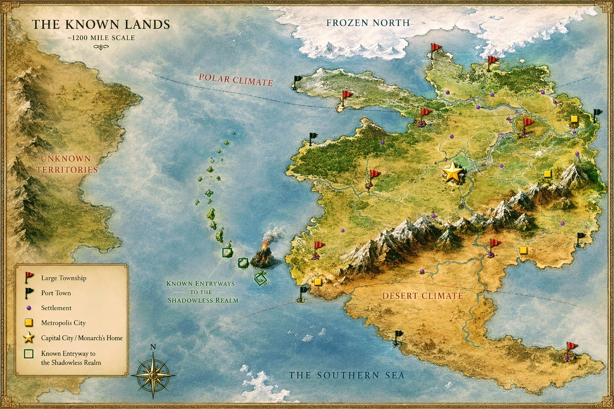

Dixon Davis
Midnight's
Reign
Expected December 2026
A dark fantasy novel from Southern Tranquility Publishing House.
Book One of the planned Shadow Fates Trilogy.
Enter TormalMore BooksA dark fantasy novel from Southern Tranquility Publishing House.
Book One of the planned Shadow Fates Trilogy.
Enter TormalMore Books“Dark skies, dark skin, dark days, dark times. The light has only one true purpose: to create more darkness. Darkness isn't always bad, and light isn't always good.”The Enlightened of Vishner · Midnight's Reign

Tormal is the setting of Midnight's Reign, a dark fantasy story where appearances are unreliable, morality is not divided neatly between light and darkness, and the forces shaping a life may be larger than the person living it.
The world map is part of the story's expanding mythology and provides the geographic foundation for the first volume of the planned Shadow Fates Trilogy.